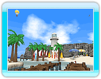

Each map has is own special features to enhance the match experience. A number of variations of a single map are available, so completely different battles can unfold. Maps are also divided up into large (L) and small (S) types.
 ● Playground
● Playground
The playground is alive with beautiful greenery, and has all kinds of fun equipment to use. Make sure to take advantage of the equipment gimmicks if you want to win.
● Beach
White sand and beautiful beaches adorn this tropical island reminiscent of the South Pacific.
Waves, coconut trees, and surfboards all add a special something to this map. Make sure to use them to your advantage.
 ● Plaza
● Plaza
Houses and shops line the streets in this glorious plaza. Winding, maze-like paths and waterways make it special, so make sure to use them to your advantage.
 ● Nature Park
● Nature Park
Rocky shelves surround this breathtaking nature park--well-known for its steep, jagged slopes and gushing geysers.
There aren't many places to hide here, so it's a test of one’s true power.